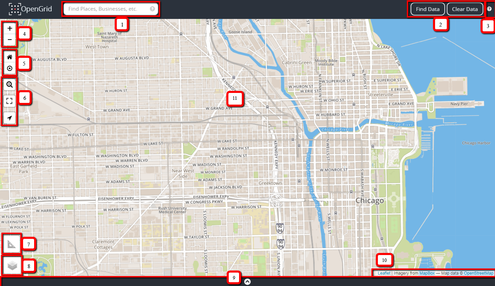

Map Grid
The grid is interactive, a user can navigate the map using a mouse, keyboard and for mobile devices by swiping using index finger or pin. The map displays the maximum of 1000 points.
All data appears on the grid as points and/or markers. Place/Address search plots as markers and Datasets plots as points on the grid. A retractable information box appears to the bottom right of the grid when a search is executed, displaying the no. of records found or an error message pertaining to a search, if any occurs.
The grid has an automatic refresh mechanism for replotting and repositioning data points on the grid; when the grid is being moved or manipulated.
The Launch Screen

| Element No. | Element Name/Description |
|---|---|
| 1. | Quick Search box is used to perform basic searches on datasets. The question mark icon within the Quick Search box displays a cheat sheet for quick search syntax. |
| 2. |
|
| 3. |
User Manual Link
|
| 4. |
Zoom In and Zoom Out Icon 
|
| 5. |
Reset Map View and Area Zoom Icon 
|
| 6. |
Zoom Specification Icon 
Full-Screen Icon 
Geo-Location Icon 
|
| 7. |
Measurement Tool 
|
| 8. |
Layers Icon 
Consist of list of grid views and weather layers. Base Layers Views:
|
| 9. | Expandable Table View Panel |
| 10. | Map attribution; display's a link for any copyright information, terms of usage, etc. |
| 11. | Main Map Display |
Map/Base Layers
The layers’ icon displays multiple basemap views and open weather layers. The list is built dynamically based on what's available through the map service provider. In the lower right hand corner on the grid, there is information and active links provided about the map services. The initial launch page displays the default basemap, street view (see login launch screen image above) and all other basemaps see images below.

Aerial View

Grayscale View
Map Key/Legend
Map key provides essential information of understanding a map. OpenGrid uses colors to signify what type of search has been executed; the key explains what the color represents. The legend is located at the bottom right of the map. If, multiple parameter types with same dataset is being displayed for a search; it will display the two datatypes based off color representation from the setup on the grid.

Map Grid and Key/Legend
Map Navigation
Navigation tools are used to aid users in finding their way around a map. Using navigational controls, the user will be able to:
-
zoom in/out
-
reset the map
-
pan to any direction
-
switch to full screen mode
-
activate geo-location
-
apply layers
-
apply measurements
-
select hyperlinks